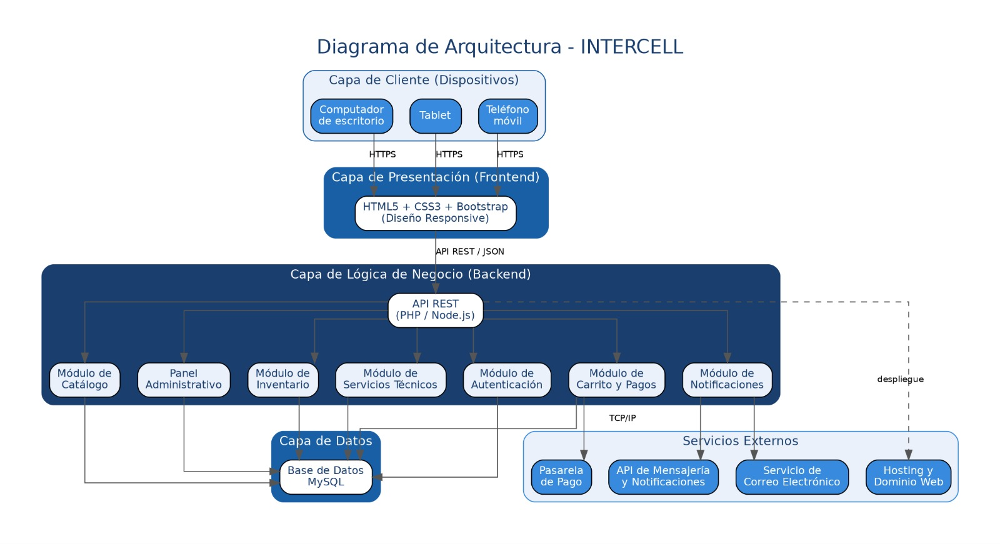
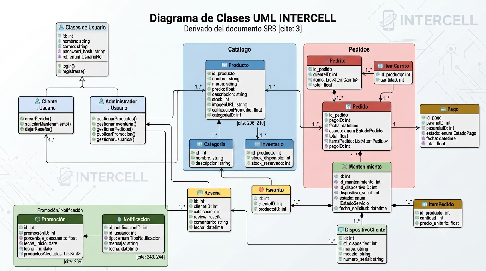
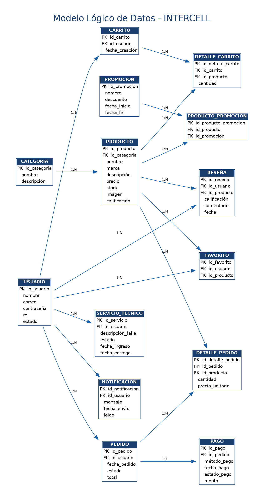
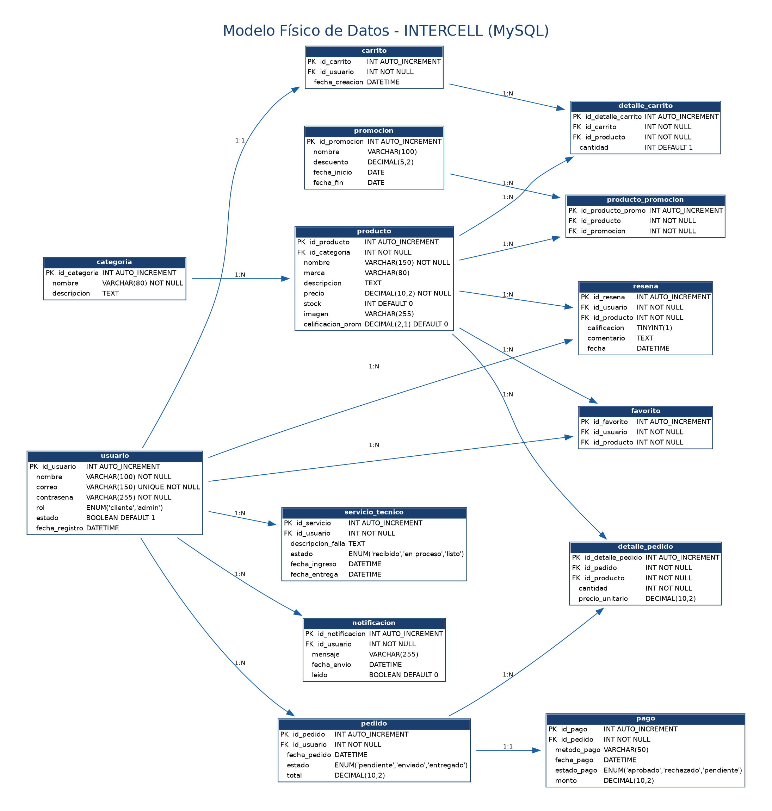
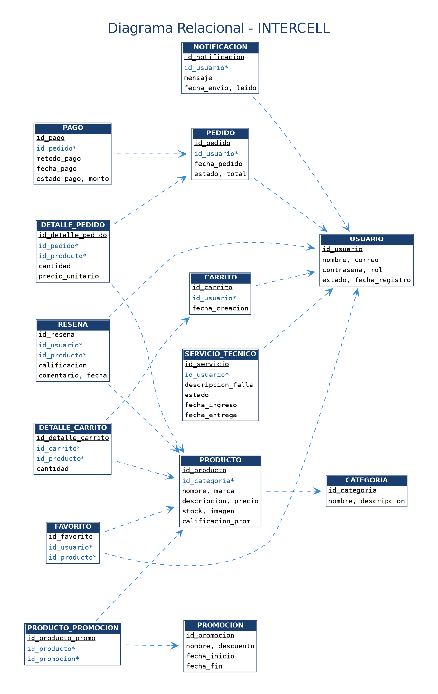
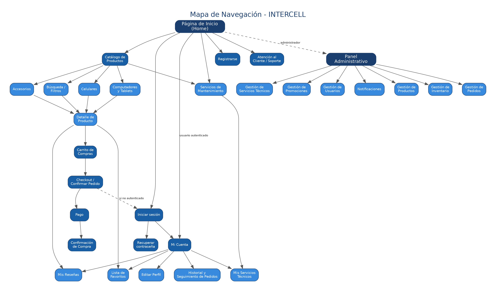
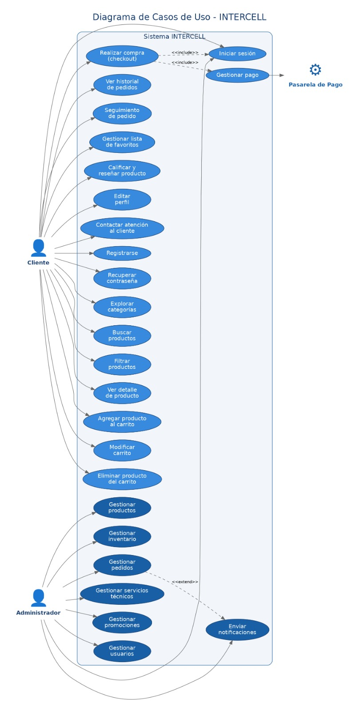
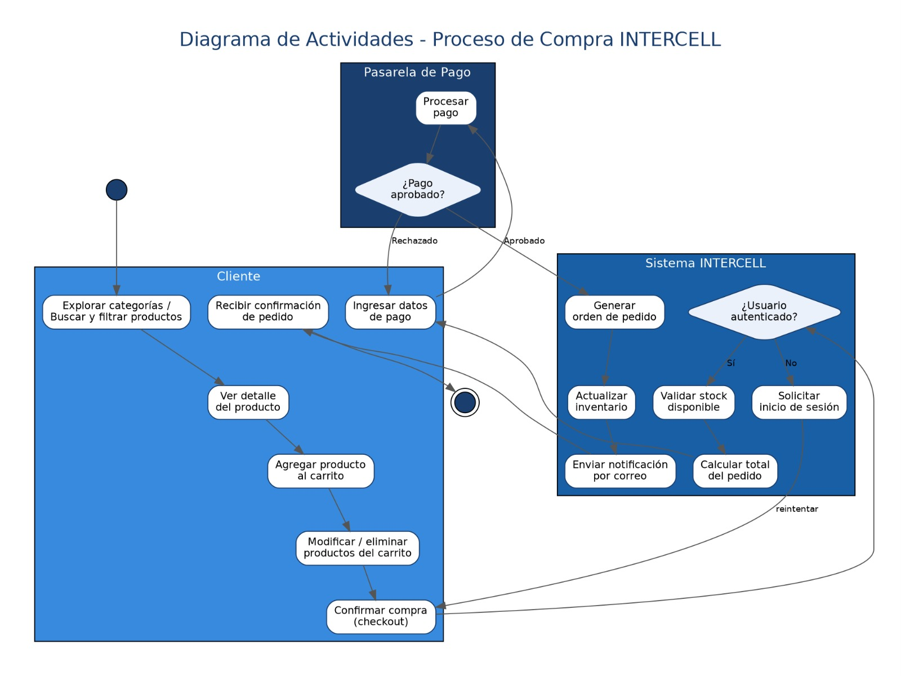
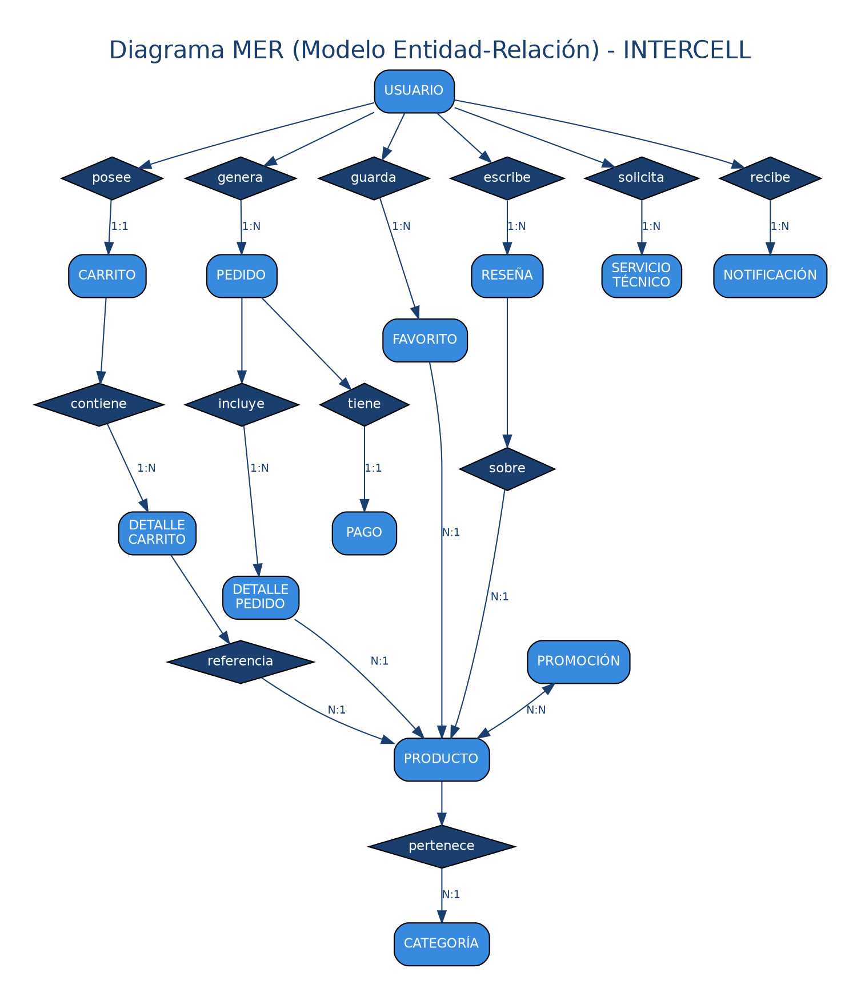

INTERCELL
Plataforma web para la venta de tecnología de alta gama, accesorios, computadores, tablets y servicios de mantenimiento técnico.
Recommended Practice for Software Requirements Specifications
Responsive — Multi-dispositivo
Estudiante ADSO · Ficha 3275760
Versión 0.3 del documento
Introducción
Situación Problema
Actualmente INTERCELL realiza gran parte de sus procesos comerciales de forma presencial y mediante redes sociales, lo que dificulta el control de inventarios, el seguimiento de pedidos, la administración de clientes y la prestación de servicios técnicos. La ausencia de una plataforma centralizada genera retrasos en la atención, pérdida de información, dificultades para consultar la disponibilidad de productos y poca automatización en los procesos administrativos. Además, los clientes no cuentan con una herramienta que les permita realizar compras en línea, consultar el estado de sus pedidos o solicitar servicios técnicos de manera rápida y segura. Debido a estas limitaciones surge la necesidad de desarrollar una plataforma web moderna que centralice toda la información del negocio y permita optimizar los procesos comerciales y administrativos de INTERCELL.
Pregunta Problema
¿Por que no hay tanta visibilidad del negocio intercell en la era digital ?
Objetivo General
Desarrollar una plataforma web para INTERCELL que permita administrar la comercialización de productos tecnológicos y la gestión de servicios técnicos mediante una solución informática segura, eficiente, escalable y accesible desde cualquier dispositivo.
Objetivos Específicos
El crecimiento del comercio electrónico ha transformado la forma en que los negocios tecnológicos llegan a sus clientes. INTERCELL nace como respuesta digital a esa necesidad.
"El presente proyecto tiene como finalidad el desarrollo de una plataforma web para INTERCELL, un negocio dedicado a la comercialización de celulares de alta gama, accesorios tecnológicos y servicios de mantenimiento. La plataforma permite a los clientes consultar productos, comparar precios, realizar compras en línea y acceder a información de servicio de manera eficiente y segura." — Documento ERS · Sección 1.1 Propósito
Alcance del Sistema
INTERCELL abarca múltiples líneas de negocio integradas en una única plataforma web.
Personal Involucrado
Roles y responsabilidades definidos para el proyecto INTERCELL.
Descripción General del Sistema
INTERCELL es una plataforma web independiente que integra comercio electrónico con gestión de servicios técnicos.
Arquitectura del Software
INTERCELL implementa una arquitectura en tres capas (Three-Tier Architecture), la cual permite separar la interfaz de usuario, la lógica del negocio y el almacenamiento de datos. Esta estructura facilita el mantenimiento, la escalabilidad y la reutilización del código.
Diagrama de Arquitectura

Diagrama de Clases diagrama MER diagrama modelo logico diagrama modelo fisico diagrama relacional diagrama mapa de navegacion diagrama casos de uso diagrama procesos de compra







Modelo Entidad Relación (MER)

Relaciones principales: • Un usuario puede realizar muchos pedidos. • Un pedido puede contener varios productos. • Un producto pertenece a una categoría. • Cada producto posee un registro de inventario. • Los servicios técnicos se asocian a los productos registrados.
Funcionalidades del Producto
Capacidades principales para los dos tipos de usuario del sistema.
Restricciones del Sistema
Condiciones y límites que el sistema debe cumplir obligatoriamente.
Requisitos Funcionales
25 requisitos funcionales identificados y documentados para INTERCELL.
Requisitos No Funcionales
Atributos de calidad del sistema basados en ISO/IEC 25010.
Stack Tecnológico
Tecnologías seleccionadas para el desarrollo de INTERCELL.
| Área | Tecnología | Justificación |
|---|---|---|
| Frontend | HTML5CSS3JavaScriptBootstrap | Estándar web W3C. Bootstrap garantiza diseño responsive y compatibilidad cross-browser. |
| Backend | PHPNode.js | PHP por madurez en hosting compartido. Node.js como alternativa para mayor escalabilidad. |
| Base de Datos | MySQL | Sistema relacional robusto, gratuito bajo licencia GPL con amplia documentación. |
| Hosting | Servidor Web + SSL | Certificado SSL para garantizar protocolo HTTPS en todas las comunicaciones. |
| Comunicación | API RESTHTTPSSMTP | Arquitectura orientada a servicios que facilita integraciones futuras con ERP y CRM. |
Patrones de Diseño
El desarrollo de INTERCELL implementa patrones de diseño que permiten obtener un software modular, escalable y de fácil mantenimiento.
Estándares de Desarrollo
INTERCELL fue diseñado siguiendo estándares internacionales que garantizan calidad, seguridad y mantenibilidad del software.
Proceso Ágil
Manual de Marca INTERCELL
El presente manual establece los lineamientos para el uso correcto de la identidad visual de INTERCELL, permitiendo mantener una imagen corporativa uniforme en todos los medios físicos y digitales.
Azul Oscuro
#0F172A
Azul Principal
#2563EB
Celeste
#38BDF8
Blanco
#F8FAFC
Conclusiones del Proyecto
El desarrollo de la plataforma web INTERCELL permite optimizar los procesos de venta, administración de productos, gestión de inventario y prestación de servicios técnicos mediante una solución informática moderna y escalable. La implementación de estándares como IEEE 830 e ISO/IEC 25010, junto con la aplicación de la metodología SCRUM y una arquitectura de tres capas, proporciona una base sólida para garantizar la calidad, mantenibilidad y evolución futura del sistema. La plataforma ofrece una experiencia de usuario intuitiva, mejora la eficiencia operativa de la empresa y fortalece su presencia digital mediante una solución tecnológica alineada con las necesidades del negocio.
Recomendaciones
Evolución Previsible del Sistema
Módulos y capacidades que podrán incorporarse en futuras versiones de INTERCELL.
25 Requisitos Funcionales
+ 15 Restricciones · 6 Atributos de Calidad
Documentación completa bajo IEEE Std 830-1998 para una plataforma e-commerce lista para implementación con stack tecnológico moderno y escalable.